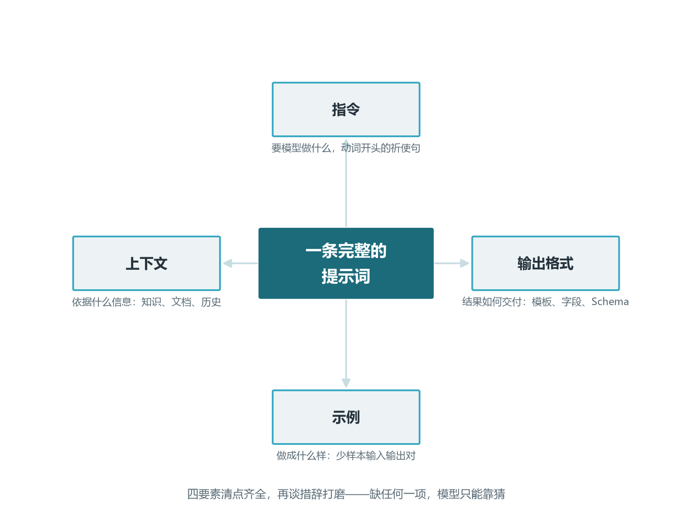
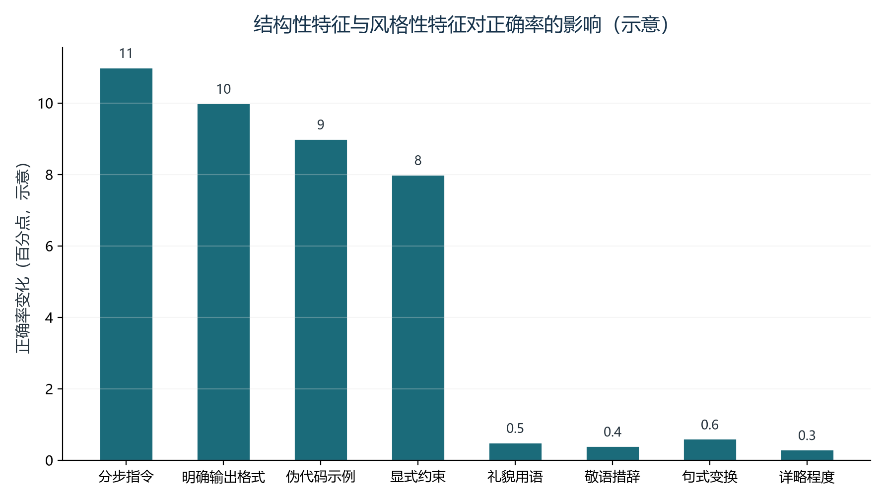
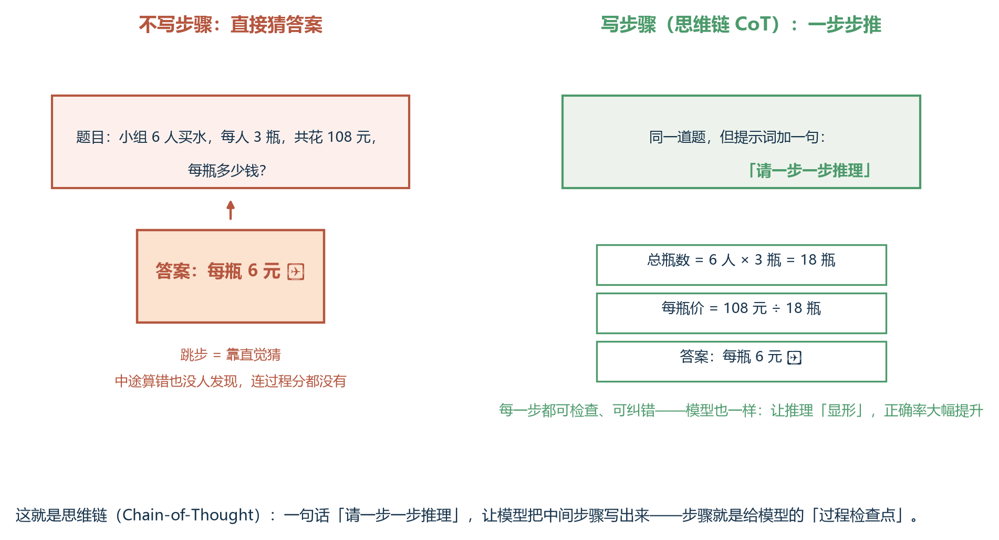
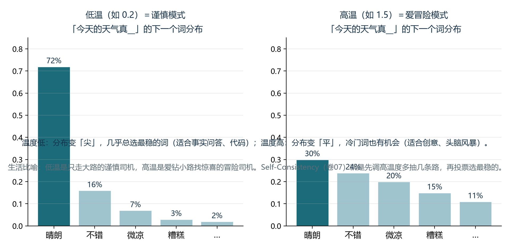
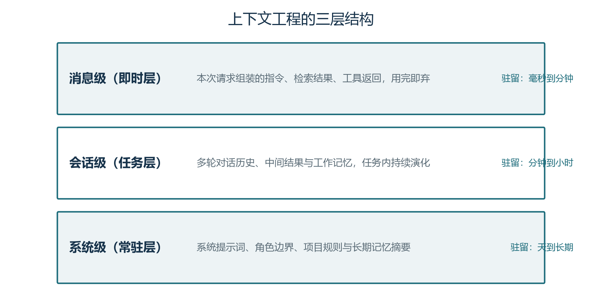
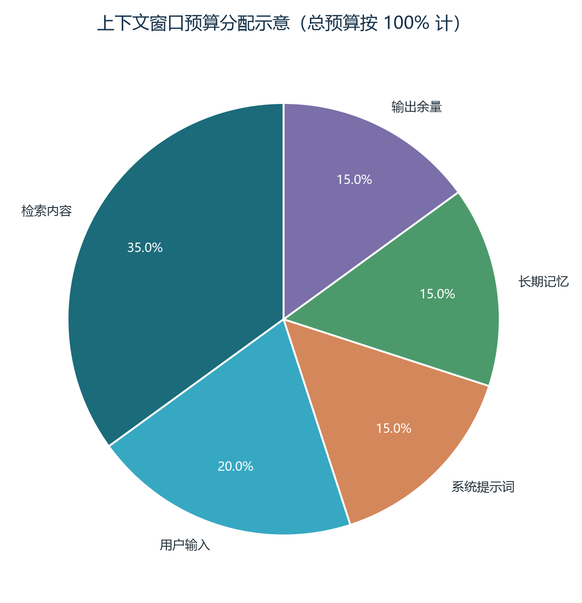
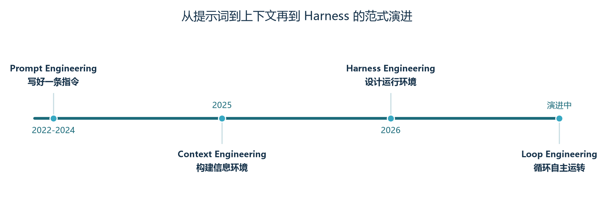

前言：让模型听懂你到底想要什么
从这一卷开始，我们由“打地基”进入"造器官"阶段。前六卷我们解释了模型如何被训练出来、Transformer 如何运转、推理引擎如何把 Token 吞吐放大到工程可用——我们已经能“让模型跑起来”。但要让它真的能完成任务，光跑起来还远远不够；你必须告诉它做什么、依据什么、做成什么样。这种“写给模型的工作说明书”，就是提示词工程与上下文工程的核心对象。
一条好的提示词不是咒语，也不是魔法配方。它是结构化的任务描述：清楚地说明角色、目标、边界、约束与交付物；它同时又是对信息环境的精心编排：在有限的上下文窗口里，决定哪些信息该放进来、哪些该摘要、哪些该丢弃。本卷分上下两篇，上篇聚焦提示词与上下文工程本身，下篇在卷十二规划推理中展开与多步决策的联动，卷十的工具调用、卷十一的记忆系统则会把上下文工程的概念延伸到更广的运行时维度。
本卷围绕三个核心问题展开：提示词为什么有效？为什么“结构”远胜于“措辞”？当单条提示词的天花板显现，我们如何上升到“上下文工程”与“Harness”的层面？这三问彼此咬合，形成从微观技法到宏观系统的完整路径。学完本卷，你会掌握一套系统化的提示词设计方法，能从“凭感觉调提示词”升级到“用工程化手段管理与迭代提示词资产”。
学完本卷，你将能够：
- 用四要素框架拆解任意一条提示词，定位结构上的薄弱环节；
- 区分零样本、少样本与思维链的适用场景，用结构化模板提升推理稳定性；
- 把单条提示词拓展为三层上下文（消息级、会话级、系统级），合理分配上下文预算；
- 设计 Harness 级的提示系统：版本管理、回归评估、A/B 测试，让提示词可治理；
- 识别常见的提示词反模式，掌握一套可重复使用的调试方法与质量检查清单。
本卷的代码示例刻意保持简短与自包含，便于你在自己的工具里复现；表格中的数字多为示意或引自公开论文，重在说明“量级感”，不要把它当成精确评测。本卷与卷十（工具调用）、卷十一（记忆系统）、卷十二（规划推理）形成强联动，建议读到对应章节时回翻本卷。
第一章 提示工程的重新定位
1.1 什么是提示工程
给提示工程一个工作定义：通过设计输入文本来引导大语言模型产生期望输出的实践。它既包含“写好一条指令”的微观技法，也包含“构建整个信息环境”的宏观设计。在 2022 到 2024 年的大众认知里，提示工程常常被简化为“找一句咒语让模型变聪明”；到了 2025 到 2026 年，社区普遍认识到：提示词的魔力并非来自措辞的玄学，而是来自结构的工程。把模型想象成一个极度聪明但极度任性的实习生：它读过海量文本、知道所有语法规则，但每次接到任务都只会“猜你想让它做什么”。提示工程就是写一份它能稳定遵循的任务说明书——结构清晰、边界明确、输出可控。
一条完整的提示词，无论长短，本质上由四类要素组成。指令告诉模型该做什么，通常是动词开头的祈使句；上下文提供依据信息，包括知识文档、检索结果、历史对话；示例通过少样本输入输出对，让模型明白“做成什么样”；输出格式规定结果如何交付，包括模板、字段、JSON Schema 等。早期的提示工程研究几乎全部聚焦在指令和示例上，也就是“措辞”和“少样本”；OpenAI 的官方指南、Anthropic 的最佳实践、LangChain 的模板库一度都在教你怎么“写出更好的句子”。这种聚焦在 2024 年被一系列严谨实验证伪：把绝大部分精力花在措辞打磨上，回报远低于把精力放在格式与示例设计上。
一个有用的比喻是：把提示词当成一份给“聪明但无背景”的同事写的任务说明书。读者必须能在不向你追问的前提下，理解任务目标、依据材料、产出形态与约束条件。把这条朴素的写作原则套到提示词上，得到的不是“一句神奇的咒语”，而是结构化的四要素组合：清晰的角色边界、清晰的任务步骤、清晰的信息依据、清晰的输出形态。看似朴素，但 2024 到 2026 年的多篇代表性论文反复证明：真正拉开质量差距的，正是这些“朴素”的结构信号。

1.2 反直觉实验：为什么结构大于措辞
2024 年 ICLR 论文《Quantifying Language Models' Sensitivity to Spurious Features in Prompt Design》（Sclar 等人）做了一项堪称“祛魅”的实验：固定模型、固定任务、固定语义——只改变格式（分隔符、新行、大小写、标签形式）。在 LLaMA-2-7B 的 MMLU 基准上，仅 10 余种格式变体，准确率就横跨 6.2% 到 82.4%，波动幅度高达 76.2 个百分点。其中一个极致的对比是同一道题，把分隔符从“passage {} answer {}”改成“passage:{} answer:{}”，准确率从 82.6% 跌到 4.3%——一字符之差，78.3 个百分点的悬崖。
措辞重要吗？Fagadau 等人 2024 年在 GitHub Copilot 上做了一项严格的统计实验：把提示词特征分为结构性特征（分步指令、明确输入输出格式、伪代码示例、显式约束）与风格性特征（敬语、句式、详细程度、礼貌用语）。结果让人意外——结构性特征对正确率有强统计显著影响（p≈10⁻⁴），而风格性特征几乎无影响（p>0.05）。换句话说，纠结于“请”和“能否”的区别，对最终正确率的贡献几乎为零；把精力放在“明确输入输出格式”上，能换回数倍的回报。
这背后有三重原因。第一重是训练分布：LLM 在预训练阶段见过海量“措辞各异但语义相似”的文本，如果它对措辞高度敏感，就会在任何任务上因人类表达方式的不同而崩溃——但实际并没有，说明 LLM 学到了语义不变性。第二重是注意力机制：Transformer 的自注意力本质上是“无序集合上的加权求和”，它对“词序”和“格式”敏感，对“具体用什么词”相对不敏感；这一点在大模型上尤其明显。第三重是工程经验——“打磨措辞”带来的提升在换模型、换任务后绝大多数都会消失。
那为什么结构重要？LLM 本质是一个“格式敏感的下一个 Token 预测器”，它的输出分布严重依赖上下文的“形式”而非“内容”。给定结尾是“Q:”，模型倾向于输出“答案文本”；给定结尾是“Q:\nA:”，倾向于输出“分步推理”；给定结尾是反引号 python 开头，倾向于输出“代码块”。常见的结构信号包括：分隔符（换行、横线、井号）划分语义块；角色标记（system/user/assistant）赋予不同权重；示例格式（Q/A 配对）教会模型按模板回答；步骤编号强制模型顺序思考；输出 Schema 约束解析；Few-shot 顺序影响检索匹配。掌握这些结构信号，比会背十个“魔法咒语”更重要。

走到工程层面，给出三条可操作的优化准则。其一是把 80% 的优化精力放在结构上：格式、分隔符、示例模板、输出 Schema，只留 20% 给措辞打磨。其二是在优化前先用一个 7 维检查清单给提示词打分（角色定义、任务拆分、输入输出格式、示例数量、分隔符使用、Few-shot 顺序、约束说明），总分低于 15 时先优化结构；其三是建立你自己的 golden set（典型测试集），任何改动先在 golden set 上跑一遍评估，看数据而不是凭感觉。
| 特征类型 | 具体特征 | 对正确率的影响 | 统计显著性 |
|---|---|---|---|
| 结构性 | 分步指令（Step-by-step） | 显著提升 | p ≈ 10⁻⁴ |
| 结构性 | 明确的输入输出格式 | 显著提升 | p ≈ 10⁻⁴ |
| 结构性 | 伪代码示例 | 显著提升 | p ≈ 10⁻⁴ |
| 结构性 | 显式约束（如"不要 X"） | 显著提升 | p ≈ 10⁻⁴ |
| 风格性 | 使用敬语（请、能否） | 无影响 | p > 0.05 |
| 风格性 | 句式（陈述 vs 疑问） | 无影响 | p > 0.05 |
| 风格性 | 详细程度（简略 vs 详细） | 无影响 | p > 0.05 |
| 风格性 | 礼貌用语 | 无影响 | p > 0.05 |
这张表几乎可以当成“提示词优化的优先级清单”抄到团队的 Wiki 上——它把直觉经验落到了统计可证伪的硬数据上。需要补充的一条是，结构性特征之间也存在差异：分步指令与明确输入输出格式在所有任务上普遍有效，而伪代码示例对代码类任务特别有效，对话类任务几乎无影响。这提醒我们，“结构”也分任务类型，不要把某个结构特征当作万能解药。
1.3 从提示词到上下文工程的范式迁移
即使把“结构”打磨到极致，单条提示词仍存在三道硬墙：上下文窗口有限（128K/200K 听起来很大，但塞进百万行代码库就捉襟见肘）；无状态（每次对话冷启动，模型记不住上周二的决策）；无工具（没有工具的 LLM 不能读文件、不能查数据库、不能调 API）。这三道墙决定了：要真正做出有用的 Agent，仅优化单条提示词远远不够，必须把视野扩展到上下文工程乃至 Harness。
上下文工程是 Anthropic 在 2025 年 9 月正式提出的术语。它的官方定义是：在推理时持续策划、筛选和维护最优的 Token 集合；这些 Token 不只来自提示词，也来自工具返回、消息历史、外部数据、检索结果、MCP 资源以及运行状态。因为 Agent 是在循环中工作的，每一步都会制造新的候选信息，所以上下文工程本质是一个持续的组织、压缩、更新与清理过程。这段定义有两个关键词：一是“持续”——上下文工程不是“配置一次”的活动，而是“每个决策点都在做”的循环；二是“Token 集合”——管理的不是“文档”或“消息”，而是“模型下一轮能看到的 Token 子集”。这两个关键词把上下文工程和单条提示词的静态设计彻底区分开来。
把提示工程和上下文工程放进一张图，可以看到一种层层递进的范式迁移。提示工程聚焦在“写一条好指令”，关心指令清晰度与示例结构，作用域是单次调用；上下文工程聚焦在“为每个决策点构建信息环境”，作用域是单次会话内完整的多轮与多工具交互；而 Harness 工程则把视野扩展到“整个提示系统”：约束、反馈循环、架构规则、工具链、生命周期管理——它关心的不再是某一条提示词长什么样，而是模型外面包的那一整套运行环境如何设计。这三层并非线性替代关系，而是同一问题的不同尺度：微观是“写一条指令”，中观是“组装一次会话”，宏观是“搭建一套系统”。
一个能够帮助理解的比喻是职场沟通。提示工程像是写一封邮件——你要想清楚“如何表达任务”，让对方理解你的意图。上下文工程像是把相关附件都带上——你不仅要表达好，还要让对方看到所有相关信息。Harness 工程像是搭建整个工作环境——你不光要发邮件、附上文件，你还要提供会议室、白板、咖啡机、打印机，让对方能在你的环境里持续工作、产出。读者可以把这三个尺度记在心里：当你说“我要优化提示词”时，先问自己——我是在优化单条指令，还是在优化一个会话的信息流，还是在优化一个完整的提示系统？问对了问题，优化才不会做空。
1.3.1 范式迁移背后的工程动因
范式迁移不是抽象概念的演化，而是被真实工程问题倒逼出来的。2023 到 2024 年，社区发现提示词的“措辞玄学”并不可靠，于是 Sclar 等人用控制变量实验证明结构才是关键。但仅有结构还不够——当 Agent 开始接管多步任务、需要工具调用、需要在多轮对话中保持记忆时，单条提示词覆盖不了完整的执行链路，于是 Anthropic、Karpathy 等人开始推广上下文工程，把视野从单条指令扩展到“模型在每个决策点能看到什么”。到了 2025 下半年到 2026 年，团队发现即便把上下文设计得再好，模型的循环仍会失控（陷入循环、超出预算、产出违规），于是 Hashimoto 等人提出 Harness Engineering，把视野扩展到“模型运行在什么系统里”。这条演进路线的共同模式是：每出现一类新的失败，就引入一层新的工程抽象来约束它；每一次抽象升级，都不是取代前一层，而是把前一层包含在内并新增一层防护。
第二章 核心技法工具箱
2.1 零样本与少样本
零样本提示（Zero-Shot）指只给指令和上下文，不提供示例。适用于指令明确、任务简单、模型对该任务已经有充分训练语料的场合。优势是简短、不占 Token 预算、适合作为基线；劣势是对“模糊指令”极其敏感，模型必须依赖自己的内化先验。多用于意图分类、抽取、改写这类明确任务。
少样本提示（Few-Shot）指在指令之外附加若干对输入输出示例，让模型从示例中“学会”输出格式与推理风格。少样本的关键不是“多”，而是“准”。Sclar 与 Fagadau 的研究反复证明：3 到 5 个多样本比 20 个相似样本更能稳定结构；顺序也至关重要，相似的例子放前面，能让模型的检索匹配更顺畅。一个被社区反复验证的少样本示例模板长这样：
# 少样本提示模板（示意，简化版）
SYSTEM = """你是 SQL 生成器。根据用户的自然语言需求生成 SELECT 语句。
示例 1
输入：查询 2024 年注册的所有用户
输出：SELECT * FROM users WHERE created_at >= '2024-01-01';
示例 2
输入：查询北京地区订单金额大于 1000 的订单
输出：SELECT * FROM orders WHERE region = '北京' AND amount > 1000;
示例 3
输入：统计每个城市的用户数量
输出：SELECT city, COUNT(*) FROM users GROUP BY city;
现在请处理用户的新输入。
"""少样本有一个常被忽视的细节：示例的多样性比数量更重要。同一类问题的十个变体不如覆盖三类问题的三个示例更能教会模型“泛化”；示例的复杂度也应呈现梯度——从简单到复杂，让模型沿梯子向上爬，而不是直接面对最难的问题。这背后是一套朴素的“教学经验”：先教简单例子建立信心，再引入复杂例子拓展边界。
2.2 思维链与 Self-Consistency
思维链（Chain of Thought，CoT）是 2022 年 Wei 等人提出的方法：在少样本示例中加入“逐步推理过程”，让模型先思考再回答。CoT 在 GSM8K、MATH 等推理基准上提升显著，能带来 30 到 50 个百分点的飞跃；但 2024 到 2025 年的一批研究开始重新审视 CoT 的真实作用：Sprague 等人对 100 余项研究做元分析后得出结论——CoT 主要帮助数学和符号推理任务，对其他任务收益有限甚至有害。
图2-1 用一道小学应用题展示思维链为什么有效：不让模型跳步猜答案，而是让中间步骤「显形」——每一步都可检查，错了能定位。对模型而言，写出的步骤会留在上下文里成为后续推理的依据，等于给了它草稿纸。

更细致的解读是：CoT 的真正作用分三层。第一层是格式约束——强制模型按“步骤到答案”的格式输出，让答案可控可解析，这是几乎所有任务都受益的部分。第二层是分布约束——把模型从“直接答案”分布拉向“推理答案”分布，对需要分布调整的任务有效。第三层是推理能力——让模型展示它的内部推理过程，这对真正需要多步推理的数学与符号任务有效。在生产实践中，大部分任务的 CoT 收益来自前两层，第三层的“教会模型推理”在现代高能力模型上其实贡献有限。一个工程经验是：用结构化 CoT（Step 1: ... Step 2: ... Final Answer: ...）比用自然语言 CoT 更鲁棒，因为它把推理过程切成了机器可校验的离散单元。
Self-Consistency（自一致性）是 2022 年 Wang 等人提出的增强方法：对同一个问题用非零温度采样 N 条推理路径，再对最终答案做多数投票。直觉与集成学习一脉相承——多条独立推理路径大概率都会收敛到正确答案；少数错误答案则会因分散而败北。论文报告在多个基准上带来 5 到 15 个百分点的提升（GSM8K 上 CoT 58.1% 提升到 74.4%；SVAMP 上 63.1% 提升到 74.2%；AQuA 上 31.0% 提升到 48.0%）。代价是 N 倍的 API 调用与 Token 消耗，N 越大边际收益越低（N=40 之后几乎不再提升）。
图2-2 解释了 Self-Consistency 为什么要「非零温度」：温度控制抽签的大胆程度。低温分布很尖，抽 10 次也全是同一个答案，投票毫无意义；适当调高温度，多条不同的推理路径才可能出现，投票才有信息量——一个细节参数，决定了这套方法是否成立。

投票环节有几个常见优化：答案归一化（不同路径可能给出 '18'、'$18'、'18.0' 等价答案，必须先归一化再投票）；加权投票（结合 self-reported confidence 或 logprobs 做加权）；困惑度投票（用答案的 negative log-likelihood 加权，越确定越有发言权）；答案聚类（对开放式问题，先做语义聚类再在聚类层级投票）。Self-Consistency 不适用于开放性生成、主观判断、单一正确答案的多 Token 输出，也不适合延迟要求高的实时场景；它最适合的是算术推理、符号推理、常识推理与多选题。一个完整的代码示例如下：
# Self-Consistency：采样 + 投票（简化示意）
from collections import Counter
def self_consistency(question, n=10, temperature=0.7):
answers = []
for _ in range(n):
text = llm_call(question, temperature=temperature) # CoT 提示
ans = extract_final_answer(text) # 提取最终答案
if ans is not None:
answers.append(normalize_answer(ans))
if not answers:
return None
winner, votes = Counter(answers).most_common(1)[0]
return {"answer": winner, "confidence": votes / len(answers)}把它和 CoT 配合使用：先用 CoT 提示引导模型写出推理，再用 Self-Consistency 投票决定最终答案。研究数据表明：结构化 CoT 配合 Self-Consistency 可达 85% 到 95% 的正确率，远高于无 CoT 的 30% 到 40% 与自然 CoT 的 50% 到 60%。但要注意成本账：N=10 时成本 10 倍，准确率提升 5 到 10 个百分点——这笔账是否划算，取决于任务的错误成本。如果错误代价极低（如娱乐对话），不必启用；如果错误代价极高（如医疗决策），成本翻 10 倍换来 10 个百分点的提升往往非常划算。
| 采样数 N | 成本倍数 | 准确率提升 | 适用场景 |
|---|---|---|---|
| N=1 | 1 倍 | 基线 | 低风险、简单任务 |
| N=5 | 5 倍 | +3 到 7 个百分点 | 中等风险任务 |
| N=10 | 10 倍 | +5 到 10 个百分点 | 高风险推理任务 |
| N=20 | 20 倍 | +8 到 12 个百分点 | 关键决策（医疗/法律） |
| N=40+ | 40 倍+ | +10 到 15 个百分点 | 极少使用，学术研究 |
在生产实践中还有一个常见问题是“多样性不足”：如果 N 条采样得到的推理路径高度相似（温度过低或 Few-shot 示例过于收敛），投票就退化成“同义重复”，浪费 Token 而没有提升。判断方法是比较 N 个答案之间的编辑距离或语义相似度——如果几乎一样，说明采样多样性不够，应该提高温度或换 Few-shot 示例；如果答案分散得很开，说明任务本身就不该用 Self-Consistency。这条经验比任何具体参数都更值得记住：Self-Consistency 提升的前提是“路径有差异”，否则就是“用 N 倍成本做 N 次同样的事”。
| 工具 | 许可 | 版本化 | 评估集成 | 热更新 | 协作 UI | 适合规模 |
|---|---|---|---|---|---|---|
| Git-Native | — | 支持 Git | 需自建 | 需重启 | 无 | 1 到 5 人 |
| Redis 自建 | — | 键值对 | 需自建 | TTL 支持 | 无 | 5 到 20 人 |
| Langfuse | MIT | 内置 | 内置 | 支持 | Web | 10 到 100 人 |
| PromptLayer | 商业 | 内置 | 内置 | 支持 | Web | 5 到 50 人 |
| MLflow Prompt Registry | Apache 2.0 | 内置 | 内置 | 部分 | Web | 10 到 100 人 |
| Braintrust | 商业 | 内置 | 强 | 支持 | Web | 50 人以上 |
| LangSmith Prompt Hub | 商业 | 内置 | 内置 | 支持 | Web | 10 到 100 人 |
在生产实践中还有一个常见问题是“多样性不足”：如果 N 条采样得到的推理路径高度相似（温度过低或 Few-shot 示例过于收敛），投票就退化成“同义重复”，浪费 Token 而没有提升。判断方法是比较 N 个答案之间的编辑距离或语义相似度——如果几乎一样，说明采样多样性不够，应该提高温度或换 Few-shot 示例；如果答案分散得很开，说明任务本身就不该用 Self-Consistency。这条经验比任何具体参数都更值得记住：Self-Consistency 提升的前提是“路径有差异”，否则就是“用 N 倍成本做 N 次同样的事”。
2.3 结构化输出与 JSON Schema
结构化输出是把模型的自由文本答案约束为可解析的格式：JSON、XML、YAML、自定义模板。它最大的价值不在“好看”，而在“可用”：下游代码可以稳定地解析、校验、路由，而不再依赖脆弱的正则表达式。生产系统的 Agent 几乎必然要和数据库、API、可视化组件打交道，没有结构化输出就等于把整个系统建立在沙子上。
让模型稳定输出 JSON 的工程方法有三种层级。最低层级是“提示词约束”：在指令中告诉模型“请以 JSON 格式输出：{"answer": ""}”，并附少样本示例。这种方法最轻量，但模型偶尔会输出多余的解释文字、忘记引号、丢失逗号。中间层级是函数调用模式（Function Calling）：把工具列表以 JSON Schema 提供给模型，模型原生输出结构化参数，再由框架强制解析为对象。这种方法完全消除了“忘记 JSON格式”的风险，是当前推荐的方式。最高层级是 JSON Mode 开关：部分厂商提供专用的 JSON 输出模式，强制保证输出是合法 JSON，但牺牲一些表达自由度。
一个常见的反模式是“嵌套提示”——把整段提示词用引号或 JSON 字符串包裹起来再嵌进去，结果破坏了分隔符与格式信号，反而让模型困惑。正确做法是用列表或分段代替嵌套，让结构信号在视觉与语义上都保持清晰。另一个反模式是“过度自由的字段”——在 JSON Schema 中允许任意嵌套对象，导致模型输出复杂到你无法解析的层级；应该严格限定字段类型、必填项、枚举值，让结构在“约束”中得到保证。一个 JSON Schema 模板示例如下：
{
"$schema": "https://json-schema.org/draft/2020-12/schema",
"title": "IntentExtraction",
"type": "object",
"required": ["intent", "confidence", "entities"],
"properties": {
"intent": {
"type": "string",
"enum": ["查询订单", "申请退款", "咨询政策", "投诉建议", "其他"]
},
"confidence": { "type": "number", "minimum": 0, "maximum": 1 },
"entities": {
"type": "array",
"items": {
"type": "object",
"required": ["name", "value"],
"properties": {
"name": { "type": "string" },
"value": { "type": "string" }
}
}
}
}
}在 Agent 中，结构化输出与工具调用经常合二为一：模型“决定调用哪个工具”本身就是一次结构化决策，工具的参数则通过 JSON Schema 校验。当结构化输出与 CoT 结合时，建议把“推理过程”放在一个 reasoning 字段，把“最终答案”放在另一个 answer 字段——这样既保留可读性，又让下游代码可以只看 answer，不必解析长推理。
2.3.1 工程经验：三种结构化层级的选型
三种结构化层级如何选型取决于任务的容错要求。低容错任务（如多步 Agent 中的工具调用、面向用户的最终输出）必须用函数调用模式或 JSON Mode 开关，把解析失败率压到接近零；中等容错任务（如内部日志、调试输出、缓存键）可以用提示词约束 + 解析器重试的方式，简洁但偶尔需要兜底；高容错任务（如创意写作初稿、内部草稿）完全不需要结构化，自由文本反而更自然。选型时还要考虑成本：函数调用模式与 JSON Mode 通常会轻微增加 Token 消耗或推理延迟；提示词约束最便宜，但需要额外的解析代码。把这条成本—容错曲线记在心里，你就知道什么时候该为“稳定解析”付出额外的工程开销。
2.3.2 一个常被忽视的细节：标签一致性
结构化输出最隐蔽的失败模式是“标签漂移”——同样的语义在不同样本里被映射到不同字段名：用户问“查订单”时模型输出 {action: "order_query"}，问“查物流”时输出 {intent: "logistics"}，字段名不一致导致下游解析逻辑必须写一堆兼容代码。避免标签漂移的关键是统一 Schema：用同一个 JSON Schema 描述所有可能的输出，强制模型在有限字段集合内做选择。如果业务上有新类别需要新增，那就升级 Schema 并重新评估——把 Schema 当成 API 来版本化，而不是任由模型自由发挥。这种“Schema 治理”是结构化输出从“能用”走向“好用”的关键一步。
2.4 角色设定的正确用法与迷信
“你是一位资深 Python 工程师，专注于编写可维护的库代码。”这种角色设定是社区里最常见也最被滥用的技巧之一。它的效果往往被高估：Fagadau 的实验里，“你是一位专家”与“你是一位专业人士”的差别统计上不显著；Sclar 的实验里，角色描述的措辞差异对结果影响极小。这意味着“用哪个头衔”不重要，“设不设角色”本身可能更不重要。
那为什么大家都在写角色设定？两个解释。第一，角色设定有边际作用：模型确实对“任务身份”有某种先验偏好，设定为“资深工程师”会比设定为“业余爱好者”略微更倾向于严谨风格；但这种偏好远小于格式、示例、约束带来的影响。第二，角色设定在表达人类意图上很清晰：当产品经理写“你是客服助手”，工程师读起来立刻知道边界是什么，团队沟通效率高。换句话说，角色设定对模型的帮助有限，对人类协作的帮助更大——它服务于“提示词被多个人维护、讨论、审阅”的工程场景。
正确用法是把角色设定当作“能力清单”来写：你能做什么、不能做什么、必须遵循的边界是什么。例如不要写“你是一位伟大的作家”，而是写“你是一位技术文档作者，专长是把复杂概念解释清楚，遵循 Google 风格，禁止使用华丽修辞”。把角色从“光环”转为“约束”，从“形容词堆砌”转为“可执行边界”。错误用法则是堆砌形容词（“非常重要”“务必”“关键”“核心”）、过度修饰（“伟大的”“杰出的”“非凡的”）、不一致的人设（前面说“专家”，后面说“像普通人一样回答”）。
一个角色设定的反直觉发现是：在结构化提示词里，角色部分可以很短——甚至可以省略——只要任务、输入输出、示例足够明确，模型就能补上“人设”。这是因为结构化提示词已经把“人设信息”隐式分散到了任务边界、输出格式、约束条件中；与之相反，在自然语言提示词里，角色设定因为没有其他结构信号承载，反而显得更重要。这也是为什么“80% 精力放在结构上”会把角色设定从“最重要”降级到“可压缩”——结构已经把角色的工作做掉了。
第三章 上下文工程：从单条 Prompt 到信息环境
3.1 上下文三层结构：消息、会话、系统
Anthropic 提出的上下文三层结构是当下最被广泛采用的工程抽象。第一层是消息级（Message-Level）：一次请求内组装的指令、检索结果、工具返回，驻留时间毫秒到分钟，用完即弃。第二层是会话级（Session-Level）：多轮对话历史、中间结果与工作记忆，驻留时间分钟到小时，任务内持续演化。第三层是系统级（System-Level）：系统提示词、角色边界、项目规则与长期记忆摘要，驻留时间天到长期，几乎不变。
这三层与代码世界的“局部变量、闭包变量、全局变量”是高度对应的。消息级像函数内的局部变量：进入函数时创建、离开时销毁；会话级像闭包变量：在某次会话的整个生命周期内可见，会话结束后失效；系统级像全局变量：在整个进程生命周期内可见，所有会话共享。把这种对应记在心里，有助于把上下文工程的每一个抽象映射到熟悉的心智模型上。
三层之间的边界至关重要。一份良好的系统提示词只放“项目级规则”：代码风格、接口规范、安全边界、合规要求；它几乎不变，所有任务共享。一份良好的会话级上下文只放"任务级上下文"：用户偏好、当前子目标、待澄清问题；它随任务推进而演化。一份良好的消息级上下文只放“本次请求的即时信息”：用户当前输入、本轮检索结果、本轮工具返回；它每次调用都重新组装。三层之间切分清晰，调试时就能精确地知道某段信息来自哪一层、为何被注入、何时该被丢弃。
3.1.1 一个三层划分的实战示例
用一个真实场景把这三层画具体。假设你在做“代码审查助手”：系统级提示词写明“审查范围、代码风格规范、必须报告的违规类型、必须遵守的安全边界”，所有用户共享同一份；会话级上下文记录“用户当前要审查哪个 PR、之前发现的问题列表、待用户确认的疑问”，随着会话推进而演化；消息级上下文则每次都重新组装——“本轮用户输入的新指令、本轮检索到的相关代码片段、本轮工具（lint/test）跑出来的结果”，仅供当前轮次决策。三层各司其职：改代码风格规范时只动系统级、加新审查步骤时只动会话级、接入新工具时只动消息级——分层让维护成本随系统复杂度呈线性增长而非指数增长。

系统级提示词的设计有几个常见原则。第一是“边界优于描述”：与其告诉模型“你应该像一个有帮助的助手”，不如告诉模型“以下三类问题必须拒绝回答：医疗诊断、法律意见、投资建议”。第二是“示例优于规则”：与其写“输出应该简洁明了”，不如给一个“简洁明了”的输出示例。第三是“可被覆盖”：明确写出哪些情况下系统提示词可以被用户请求临时覆盖（比如“我现在要模拟一个对话场景，能否暂时扮演张三”），让模型知道边界在哪里软化、哪里硬挺。
3.2 上下文预算分配：让每一 Token 物尽其用
上下文窗口是 Agent 系统最稀缺的资源。当前主流模型的窗口在 128K 到 200K 之间，看起来很大，但把检索结果、工具返回、长对话历史全部塞进去，很快就捉襟见肘；并且模型对长上下文的利用并不均匀，研究反复证明“中间遗忘”——靠近开头与结尾的信息更容易被关注，中段信息容易被忽略（Lost in the Middle 现象，卷二）。所以上下文工程的核心问题不是“能不能塞进去”，而是“每一 Token 预算该分给谁”。
一个实用的预算分配示意是：检索内容占 35%，用户输入占 20%，系统提示词占 15%，长期记忆摘要占 15%，输出余量占 15%。这套分配不是金科玉律，但传递了一个清晰的设计直觉：检索内容是当下决策最直接的依据，应该给最多份额；用户输入是任务目标的核心依据，次之；系统提示词是项目级规则，体量应该克制；长期记忆以摘要形式存在，体量与项目周期相关；输出余量是为模型回复预留的空间，不可压到零。

预算分配要随任务动态调整。客服任务里“检索内容”权重应该加大，因为答案必须基于最新政策；长任务多步执行里“工作记忆”权重应该加大，因为模型需要回看已完成的工作；创意写作任务里“系统提示词”与“用户输入”权重更大，因为检索内容大多是噪声。预算分配也可以成为 A/B 优化的变量：给“检索内容”多分 5%，看下游任务准确率是否提升；给“系统提示词”压缩 5%，看是否损失了关键约束。这种“按预算分配 Token”的思路，把上下文工程从“凭感觉裁剪”升级到“按数据调参”。
当上下文接近预算上限时，启用压缩（Compaction）。压缩不是简单截断，而是有策略的摘要：保留关键事实（人名、数字、决策），丢弃修饰与冗余（语气词、过渡句、重复描述）；保留最近 1 到 2 轮完整消息，更早的历史对话压缩为结构化摘要。Anthropic 在 Opus 4.5 阶段一度引入 context reset 机制，但在 4.5 已经能自主管理上下文后被移除——这说明压缩是“可拆卸的 Harness”，模型能力提升后可以弱化甚至取消。
3.3 压缩与隔离两大策略
上下文管理有两大基本策略：压缩（Compression）减少信息体量，隔离（Isolation）减少信息耦合。压缩是“把同样的信息用更少 Token 表示”，隔离是“把不同的任务分到不同的上下文”。两条策略各有适用场景，成熟的系统往往两者并用。
压缩的核心是“有损但保关键”。具体方法包括：摘要压缩（把长文本压缩成保留关键事实的结构化摘要）；引用压缩（用文档 ID + 摘要代替全文复制，避免跨上下文重复同一段长文）；模型压缩（让 LLM 自己生成摘要，再让另一个 LLM 校验摘要质量——双模型交叉校验能减少摘要失真）；分段压缩（按语义分段，逐段摘要而非整篇摘要）。压缩的代价是“信息丢失”：摘要可能丢失语气、细节、关联——所以压缩比不是越高越好，而是要保留“完成任务所需的最小信息集”。
隔离的核心是“让一个上下文只装一个任务的全部信息”。具体方法包括：会话隔离（不同用户/不同任务用不同的会话上下文，互不干扰）；角色隔离（不同 Agent 角色拥有各自独立的系统提示与工作记忆）；阶段隔离（同一任务的不同阶段用独立上下文，完成后只把关键结论摘要带回主上下文）。隔离的代价是“信息跨上下文传递的损耗”：摘要、引用、关键决策需要被显式搬运。这正是卷十 Subagent 与卷十一记忆系统的发力点：它们解决了“如何在隔离的同时保留关键共享信息”。
两条策略的组合带来一个反直觉的洞察：在很多生产场景里，隔离比压缩更重要。一个常见的反模式是把所有用户的历史都塞进同一个会话，结果上下文迅速膨胀，模型开始遗忘早期信息。更好的做法是：把每个新任务开一个隔离的会话，把历史信息以“摘要+引用”的形式按需注入。这种“会话级隔离 + 引用级共享”的组合，既能避免上下文爆炸，又能保证关键决策的连续性。卷十一会展开记忆系统与这种隔离的协作机制。
3.4 Lost in the Middle：长上下文的排版对策
Lost in the Middle 是 2023 年 Liu 等人发现的实证规律：当上下文窗口被填得很满时，模型对中段信息的利用显著低于对开头与结尾信息的利用。直觉上很像人类的“首因效应与近因效应”：最先读到的和最后读到的记得最清楚，中间的被淹没在噪音里。这一规律在 RAG、Agent、阅读理解等多类任务上反复验证。
工程上的对策有四条。第一条是把最关键的信息放在开头与结尾：系统提示词放最前面，因为它定义了所有后续行为的边界；当前问题的关键事实放在检索结果之前，确保模型优先看到；最终答案的格式要求放在最后，让模型在生成时仍然记得。第二条是双段检索与拼接：检索分两次进行——一次查询“问题核心事实”、一次查询“补充细节”，把核心事实放在开头、补充细节放在中段，让模型形成“核心优先、细节次之”的注意力结构。第三条是用结构化分隔符强化分段信号：长上下文中用明显的分隔符（---、###、<tag>）把不同来源的内容切开，避免模型把不同段的信息混为一谈。第四条是适当压缩中段：中段信息最容易丢失，优先把中段内容摘要化或丢弃，保留开头与结尾的完整性。
一个经常被忽视的细节是输出结构对“中部遗忘”的对冲效应。如果提示词要求“按 1、2、3 列点回答”，模型在生成时也会倾向于把重要信息放在 1 和 3 的位置；这就在输出侧形成了一种“反 Lost in the Middle”——用结构化输出诱导模型把关键信息放在更容易被记住的位置。结构化输出不只是为了“便于解析”，它本身就是一种注意力管理工具。
3.4.1 长上下文的检索—压缩混合策略
实战中很少有任务允许把所有上下文原文塞进去。常见做法是检索—压缩混合：先用检索（RAG）从大规模语料里捞出 Top-K 候选片段，再对每个片段做“保留关键事实的摘要”，最后把摘要后的片段按与当前问题的相关性排序后注入上下文。这种混合策略的优势是“既保留关键信息又控制体量”，代价是检索质量与摘要质量共同决定最终效果——检索召回错了关键事实，摘要再精也救不回来；摘要丢掉了细节，检索再准也白搭。所以这条策略对工程能力的要求很高：在卷八 RAG 与卷十一记忆系统会展开完整的检索与压缩链路。
还有一条常被忽视的工程经验是“先排版后注入”。在把检索片段塞进上下文之前，先用统一模板把它们格式化——每段加上来源标签、相关度评分、关键句高亮，让模型在阅读时能立刻区分“这是哪里的信息、有多相关、哪句话是核心”。这种结构化的预处理相当于“预分配模型的注意力资源”，让模型不必先做一次“上下文解析”，直接进入“阅读与推理”。这一技巧在 RAG 系统里几乎必用，因为它把检索质量差的部分影响降到了最小——即便检索回了噪声片段，模型也能识别它是噪声并予以忽略。
最后要强调的一点是：长上下文的工程价值不在于“塞得多”，而在于“用得精”。把 200K Token 装到 80% 并不意味着模型会看全部——Lost in the Middle 提醒我们它真正会关注的可能只有 30%。把这段 30% 选对、把它的格式排好、把它的来源标清，比盲目扩大窗口的回报高出数倍。
一份用来选型与避坑的对照表可以帮助你快速决策。下表把常见的长上下文处理方式按“实现难度、信息保真度、推理成本、典型坑”四个维度做了对比，便于在不同任务场景下快速定位合适的方案。
| 处理方式 | 实现难度 | 信息保真度 | 推理成本 | 典型坑 |
|---|---|---|---|---|
| 全量塞入 | 低 | 最高 | 最高 | Lost in the Middle、Token 浪费 |
| 截断首尾 | 低 | 中 | 中 | 关键信息被截断 |
| 摘要压缩 | 中 | 中低 | 低 | 摘要失真、关键事实遗漏 |
| 检索 Top-K 注入 | 中 | 中 | 中 | 检索召回错误 |
| 检索 + 摘要混合 | 高 | 中高 | 中 | 检索与摘要双重质量风险 |
第四章 Harness：Agent 时代的提示系统
4.1 从 Prompt 到 Context 到 Harness 的演进
2026 年 2 月，Mitchell Hashimoto 在博客里提出了 Harness Engineering 这个术语，一时间 Anthropic、LangChain 等公司把它写进工程博客。它不是提示工程的子集，而是它的超集——Harness 关心的是“模型外面包的那一整套运行环境”：约束、反馈循环、架构规则、工具链、生命周期管理。一个粗略的演进时间线是这样的：2022 到 2024 年是 Prompt Engineering 阶段，核心问题是如何写好一条指令；2025 年是 Context Engineering 阶段，核心问题是模型在决策时看到什么；2026 年是 Harness Engineering 阶段，核心问题是模型运行在什么系统里。

三个阶段的比喻很容易理解。Prompt Engineering 是写一封邮件——你要想清楚“如何表达任务”，让对方理解你的意图。Context Engineering 是把相关附件都带上——你不仅要表达好，还要让对方看到所有相关信息。Harness Engineering 是搭建整个工作环境——你不光要发邮件、附上文件，你还要提供会议室、白板、咖啡机、打印机，让对方能在你的环境里持续工作、产出。三个阶段不是“替代关系”，而是“包含关系”：Harness 把 Prompt 与 Context 包含在内，再额外提供反馈、约束、评估、生命周期管理。
2026 年最反直觉的事实是：Harness 的回报率开始超过模型本身。Anthropic 在全栈开发 Agent 上做了一项内部实验，仅换运行模式（Harness），就把“20 分钟 / 9 美元就崩溃”变成“6 小时 / 200 美元能完整玩下来”。LangChain 在 Terminal Bench 2.0 上做了另一项实验，仅调整 Harness（提示词 + 工具调用方式 + 反馈循环），把 gpt-5.2-codex 的成功率从 52.8% 提升到 66.5%，排名从 30 余名冲到前 5；Claude Opus 4.6 换 Harness 后从第 33 位升到第 5 位。这些数据共同传递了一个信号：在很多场景下，优化模型外面的壳，比等下一代模型更高 ROI。
4.2 三层范式：消息级、会话级、提示系统级
Harness 设计有一个清晰的层级演进。第一层是消息级（Message-Level）：每次调用 LLM API，构造一组 messages，扔给模型，看输出。这种范式适用于一次性任务、原型验证、低风险场景。代码示例非常短，几行 messages 即可。但消息级无法做跨消息的状态管理，多轮对话、工具调用、长期记忆都没有答案。
第二层是会话级（Session-Level）：引入“会话”抽象。一个会话是一组有上下文关联的消息集合，模型在这个集合中保持连贯的认知。会话级的关键设计包括：会话状态管理（维护一个 messages 列表，每轮追加 user/assistant 消息）；上下文窗口管理（消息超过窗口大小时截断旧消息或摘要压缩）；工具调用循环（在消息中追加 tool 角色的返回，让模型看到工具结果）；会话恢复（支持从某个 checkpoint 恢复，处理长任务的中断）。会话级解决了多轮对话的问题，但仍不够——你无法在会话级范式下做约束验证（用户输入是否合法）、反馈循环（执行结果是否符合预期）、系统级治理（如何记录日志、监控质量）。
第三层是提示系统级（Prompt System）：为 LLM 搭建完整的运行环境。一个完整的提示系统至少包括：System Prompt 注入（通过 AGENTS.md / CLAUDE.md 注入项目级规则）、工具注册表（管理可调用的工具及描述）、Skills 注册（按需加载的领域知识）、子代理调度（隔离上下文的小型 Agent）、Hooks（在生命周期事件中插入逻辑）、Evaluator（独立于 Generator 的质量评估器）、上下文压缩（自动摘要过长的历史）、Backpressure（质量门禁，不通过则不结束）、日志与可观测性（记录每次决策链路）。提示系统级是 Harness Engineering 的真正含义：它不再是一次 LLM 调用，也不再是一个会话，而是一套为 LLM 持续运转而搭建的工程系统。
4.3 Harness 工程的代码组织
Harness 工程的代码组织可以归纳为五个层面。第一层是提示词资产：用独立目录（如 prompts/）存放所有提示词模板，按职责分类（customer-service/、code-review/），每个提示词目录下放多个版本（v1.0.0.md、v1.1.0.md）和环境标签（production.json、staging.json）。第二层是注册中心：用一个 Prompt Registry（Git-Native、Redis、Langfuse、PromptLayer 等）管理所有版本，提供加载、缓存、热更新、审计能力。
第三层是评估体系：每个提示词对应一份 golden set（典型测试用例集），每次改动都跑 golden set 评估，记录准确率、延迟、Token 消耗、安全性等指标；评估结果与代码改动一起提交到版本库，形成可回滚的“提示词改动记录”。第四层是运行时包装：把提示词加载、变量注入、消息组装、工具调用、Hook 执行、Evaluator 验证等流程封装为一个 Harness 类，对外暴露简单的 run(input) 接口；调用方只关心“传入任务、返回结果”，不必了解内部细节。
第五层是可观测性：每次 Harness 调用都记录完整的决策链路——加载了哪个版本的提示词、注入了哪些上下文、模型返回了什么、工具调用了哪些、Evaluator 如何判定、最终结果是什么。这些记录用 OpenTelemetry、Langfuse、LangSmith 等工具串联，形成可回放、可审计、可调试的运行档案。卷十五会展开可观测性与评估体系的完整设计。
4.4 提示词版本管理、A/B 与回归评估
提示词是 Agent 系统的“源代码”，所以它必须走版本管理。具体做法是：每个提示词模板是一个独立的 Markdown 或 YAML 文件，文件名带语义化版本号（v1.0.0、v1.1.0）；每次修改提交一个 commit，commit message 写清楚改动原因（“修复 Few-shot 示例的多样性”“引入新的输出 Schema”）；修改通过 PR Review，算法工程师 + 产品经理双重 review；CI 自动跑 golden set 评估，通过后才能合并到 main 分支；上线后通过修改 production.json 指向新版本实现 promotion，回滚则把 production.json 指回上一个版本（秒级完成）。
提示词的版本管理还有一个特殊需求：环境标签。一个提示词可能同时存在 staging 版本（待验证）、canary 版本（5% 流量）、production 版本（95% 流量），三者指向不同的版本号。运行时根据环境标签加载对应版本，避免“测试时验证了没问题的版本还没上线”“线上跑的版本不是最新验证过的版本”这种典型事故。Langfuse、PromptLayer、MLflow Prompt Registry 等工具都内置了这种环境标签机制。
A/B 测试是把同一份任务同时交给两个版本的提示词处理，比较两者的关键指标。典型做法是把 5% 的流量随机分配给新版本，其余 95% 走老版本；运行一段时间后比较两组的准确率、延迟、Token 消耗、安全性。A/B 测试比传统 golden set 更接近生产真实流量，但成本也更高（双倍调用）。回归评估是把改动后的提示词在 golden set 上重跑一遍，对比改动前后的指标变化；任何关键指标的下降都应该触发警告或自动回滚。成熟的 Harness 工程通常同时启用两套机制：A/B 用于渐进式验证，回归用于变更验证。
第五章 反模式与调试方法
5.1 八大常见反模式
提示词工程里有一类高频错误模式，它们在各种团队、各种任务上反复出现，把它们提前识别能省下大量调试时间。第一是祈祷式提示词：请尽量准确、详细、专业地回答。这种提示词对模型毫无约束——模型不知道你想要哪种输出，最稳妥的做法是猜一个“看起来好”的输出，结果经常与你的真实期待不符。第二是堆砌形容词：非常重要、务必、关键、核心。模型对这些词的权重分配不稳定，堆得越多反而越容易被忽略；正确做法是用结构化标签（如 [CRITICAL] xxx）代替模糊的强调。第三是过多样例：塞 10 个 few-shot 例子。挤占 Token 预算的同时让示例过拟合，导致模型对示例之外的情况束手束脚；精选 3 到 5 个多样化示例效果更好。
第四是不一致的人设：前面说“你是一个专家”，后面说“像普通人一样回答”。角色冲突会让模型行为不确定，它不知道该按哪个角色来；正确做法是在系统提示中固定人设边界，不要在任务中途切换。第五是嵌套提示：把整个 prompt 用引号或 JSON 字符串括起来再嵌进去。这种做法破坏分隔符与格式信号，模型解析不出层级；用列表或分段代替嵌套更清晰。第六是不测试就上线：在 prompt 编辑器里写完直接用，没测过边界情况；正确做法是先在 golden set 上评估，看到数据再上线。
第七是负向指令依赖：只写"不要 X、不要 Y、不要 Z"。模型对负向指令的理解力远低于正向指令——"不要写不安全的代码"它可能理解为"写所有可能的代码"，正确做法是同时给出正向指令（"遵循 OWASP Top 10 安全规范"）。第八是上下文淹没：把用户输入、检索结果、工具返回、长期记忆全部塞进同一个上下文，结果上下文被噪声淹没，模型开始遗忘关键信息；正确做法是按 3.2 节的预算分配策略，明确每一类信息的份额上限，并按需压缩或隔离。
5.2 提示词调试四步法
提示词调试有一套可重复使用的四步法。第一步是隔离变量：当你面对“输出不对”时，先问自己——是哪一类变量出了问题？是指令不清、示例不对、上下文有误、还是输出格式有歧义？把问题精确定位到一类变量，再集中精力调整这一类，避免在多个维度同时改动导致归因困难。第二步是最小复现：把任务简化到最小可复现案例——剥离掉所有非必要信息，只保留核心冲突。如果最小案例下提示词就已经出错，那么生产任务上的错误必然继承；如果最小案例下提示词正常，那么问题来自“复杂度叠加”，可以逐步加回变量。
第三步是逐段替换：把当前提示词切成若干段（角色段、指令段、上下文段、示例段、格式段），逐段用“已知正常”的版本替换，看输出在哪个替换点恢复正常。这种方法的好处是定位精确——你很快就能知道是哪一段出了问题；坏处是耗时——每次替换都要重跑评估。生产实践中建议用 golden set 加速评估，让逐段替换成为可批量执行的工程动作。第四步是回归验证：任何改动后都要在 golden set 上重跑评估，看改动是否解决了问题、又是否引入了新问题；任何关键指标的下降都应该触发警告或回滚。
一个被反复验证的工程经验是：提示词调试的本质是“假设驱动实验”。每次改动前先写下假设——比如“我把 Few-shot 示例从 3 个增加到 5 个，准确率应该提升”；改动后看假设是否成立；如果成立就保留，不成立就回滚或换思路。这种“有假设、有数据、有结论”的工作方式，比凭感觉调提示词的效率高出数倍，也是把提示词工程从“手艺”升级到“工程”的关键。
5.3 提示词质量检查清单
在打磨一条提示词之前，按 7 维检查清单打分（0 到 5 分）能避免遗漏。角色定义维度：差（无角色）、中（一句话角色）、好（完整角色 + 能力边界 + 限制）。任务拆分维度：差（一段话描述）、中（分 2 到 3 步）、好（分 5 步以上 + 子任务）。输入输出格式维度：差（未说明）、中（自然语言描述）、好（Schema/JSON/伪代码）。
示例数量维度：差（无示例）、中（1 个示例）、好（3 到 5 个多样本）。分隔符使用维度：差（无分隔）、中（偶尔换行）、好（显式分隔如 ---、###、<tag>）。Few-shot 顺序维度：差（随机）、中（按相似度）、好（按相似度+复杂度递进）。约束说明维度：差（无约束）、中（1 到 2 条）、好（列出禁止/必须做/边界条件）。总分低于 15 时先优化结构；总分 15 到 25 时补充示例与约束；总分大于 25 时再做微调，此时措辞优化才有意义。
一个常被忽视的清单维度是“失败模式枚举”：明确列出你预期的模型可能犯的错误（漏提取实体、错配类别、输出无效 JSON 等），并给出对应的兜底指令。这种“先想失败，再写提示词”的逆向思维，能让提示词从一开始就具备防护性，而不是事后打补丁。另一个常被忽视的维度是“边界测试”：用极端输入（超长文本、空字符串、乱码、敏感词、跨语言混合）跑一遍提示词，看是否会在边界情况下崩溃；边界测试的失败案例往往是 golden set 的最佳补充。
5.4 Harness 工程的反模式与对策
Harness 级别也有几类高频反模式。第一类是“硬编码提示词”：把提示词写死在代码字符串里，每次修改都要发版。这种做法让提示词脱离了版本管理，工程师不敢改、不能改、改了也无法回滚；正确做法是把提示词外置到独立文件，配合 Prompt Registry 治理。第二类是“凭感觉调提示词”：工程师在测试时“感觉”输出变好了就直接上线，没有 golden set 评估、没有 A/B 测试、没有回归记录；正确做法是建立评估体系，让提示词改动走“假设—实验—数据”的工程闭环。
第三类是“过度工程 Harness”：把所有可能的 Hook、Evaluator、子代理都堆上去，结果 Harness 本身成为故障源——Hook 顺序错了、Evaluator 之间冲突了、子代理的上下文互相污染了。正确做法是从最小可用 Harness 出发，按需扩展：先有系统提示与基础工具调用，再加 Hook、加 Evaluator、加子代理；每加一层都验证其对任务的实际贡献，避免无效复杂度。第四类是“忽略模型升级”：Harness 设计把每一层约束都“绑死”，模型升级后旧的约束失效，新的能力反而被束缚。正确做法是把 Harness 设计成“模型升级时可以拆掉的层”，定期审视每一层约束在当前模型下是否仍然必要。
一个工程层面的经验是：Harness 不是“一次设计就完事”，而是“随模型演化而持续重构”的系统。Anthropic 的实践就是一个例子：context reset 机制在 Opus 4.5 阶段就被砍掉（4.5 已能自主管理上下文），sprint 结构在 Opus 4.6 阶段也被移除（4.6 不再有“上下文焦虑”）——这说明 Harness 是“可拆卸的”而非"绑死的"。这种“可拆卸性”本身是 Harness 设计的关键指标：如果你的 Harness 在模型升级后无法拆掉某些层，说明它绑得太死了。
Harness 之于 Agent，恰如缰绳、马鞍、马蹄之于马——模型是马，Harness 是所有其他部分。没有 Harness 的系统跑得快也有能力，但没有可靠的方向。
—— Anthropic 工程博客
本卷小结
本卷建立了三个核心认知。其一，提示工程不是“找一句咒语”的玄学，而是结构化任务说明书的设计实践。一条提示词由指令、上下文、示例、输出格式四要素组成，结构远胜于措辞——这是 2024 到 2026 年最重要的认知升级，从 Sclar 的 76 个百分点波动到 Fagadau 的 p=10⁻⁴ 统计显著，反复被独立研究验证。其二，单条提示词有天花板，上下文窗口有限、无状态、无工具三道墙让提示词必须从“单条指令”扩展到“完整信息环境”。Anthropic 的上下文工程三层结构（消息级、会话级、系统级）给出了清晰的工程抽象，配合上下文预算分配与压缩/隔离两大策略，构成完整的上下文管理体系。
其三，Agent 时代需要 Harness 思维。Harness 把 Prompt 与 Context 包含在内，额外提供反馈、约束、评估、生命周期管理。Harness 设计分三层范式（消息级、会话级、提示系统级），代码组织要落到五层（资产、注册、评估、运行时、可观测性）。2026 年最有冲击力的发现是：Harness 的回报率开始超过模型本身——优化模型外面的壳，比等下一代模型更高 ROI。最后，提示词调试要靠“假设驱动实验”，而不是凭感觉；八大反模式与四步调试法是任何团队都可以立刻上手的工程实践。
本卷实战实验室
本卷实验是全书最重要习惯的起点：建你自己的黄金评估集，用数据裁决提示词。总耗时约 90 分钟。
实验 1：二十题黄金集（30 分钟）
从你的业务或兴趣领域写 20 条真实问题：10 条常规、5 条易歧义、3 条知识外（应拒答）、2 条带格式要求。每条标注"好答案必须包含的关键点"：
[
{"q": "你们的退货政策是什么？", "must": ["7天", "运费"]},
{"q": "写一首关于秋天的诗", "must": ["意象"], "type": "open"},
{"q": "2026 年世界杯冠军是谁？", "must": ["无法"], "type": "refuse"}
]实验 2：两版提示词 A/B 对决（60 分钟）
from openai import OpenAI
client = OpenAI()
V1 = "回答用户问题。"
V2 = "回答用户问题。规则：1. 只依据已知信息，不知道就说不知道；\n2. 先给结论再给一句理由；3. 不超过 80 字。"
for name, sp in (("V1", V1), ("V2", V2)):
ok = sum(all(k in client.chat.completions.create(model="gpt-4o-mini",
messages=[{"role": "system", "content": sp},
{"role": "user", "content": c["q"]}]).choices[0].message.content
for k in c["must"]) for c in gold_set)
print(name, f"通过率 {ok}/{len(gold_set)}")验收标准：两张通过率数字加三条归因（V2 为什么赢或输）。把评估集与结果存档——它是卷15 评估体系的起点，也是你第一次用数据而非感觉裁决提示词。
判分关键词别选"万能词"；每次只改一个变量（规则或示例），否则提升不知道归功于谁。
思考与练习
- 用本卷介绍的“四要素框架”拆解你最近用过的一条提示词，给每个要素打 0 到 5 分，找出最薄弱的一项并重写；用 Sclar 的格式敏感实验思路验证你的改写是否真的稳定。
- 选一个你手头的推理类任务（例如数学应用题），分别用零样本、自然 CoT、结构化 CoT、结构化 CoT + Self-Consistency（N=10）跑 20 道题，记录各自的准确率与平均 Token 消耗，画一条成本—质量曲线。
- 用 Anthropic 的三层结构（消息级、会话级、系统级）描述你当前项目里上下文信息的分类，重新审视是否每一类信息都放在了正确的层级；尝试把一段 200K Token 的长上下文按预算分配示意（35% 检索 / 20% 用户 / 15% 系统 / 15% 记忆 / 15% 输出）重新规划，看看是否能压缩到 80K 同时不损失关键信息。
- 在你团队的提示词库里挑一条核心提示词，给它建立最小可行 Prompt Registry：版本目录（v1.0.0、v1.1.0）、production.json 环境标签、10 道 golden set 评估用例；下次改动走 PR Review + 评估通过的流程。
- 预习思考：为什么“上下文预算有限”这一约束会同时催生出上下文工程（卷七）、记忆系统（卷十一）、向量检索（卷八与卷九）三套看似不同的技术？它们各自的取舍逻辑是什么？
面试题精选（附参考答案）
本节共 10 道题，主要改编自配套面试题集《提示词与上下文工程经典面试题与答案》，并依据本卷正文新编了上下文预算分配、压缩与隔离等题库未覆盖的重点题，按由浅入深排列，用于面试准备与自测。参考答案均为要点式，只保留关键数据、术语与结论，并标注了对应的本卷章节。建议先自行作答，再对照答案查漏补缺。
题1 什么是提示工程？一条完整的提示词由哪四类要素组成？
提示工程是通过设计输入文本来引导大语言模型产生期望输出的实践。可以把模型想象成一个极度聪明但极度任性的实习生：它读过海量文本，却每次都在猜你想让它做什么；提示工程就是写一份它能稳定遵循的任务说明书（见本卷 1.1 节）。
- 指令：告诉模型该做什么，通常是动词开头的祈使句。
- 上下文：提供依据信息，包括知识文档、检索结果与历史对话。
- 示例：通过少样本输入输出对，让模型明白做成什么样。
- 输出格式：规定结果如何交付，包括模板、字段与 JSON Schema。
要点：早期研究几乎全部聚焦指令与示例（即措辞与少样本），2024 年后的严谨实验证明，把精力放在格式与示例设计上回报远高于措辞打磨。
题2 为什么说提示词优化中结构大于措辞？有哪些实验证据？
核心结论：把约 80% 的优化精力放在结构上——格式、分隔符、示例模板、输出 Schema，只留 20% 给措辞打磨（见本卷 1.2 节）。
- Sclar 等人 ICLR 2024：固定模型、任务与语义，仅改变格式，LLaMA-2-7B 在 MMLU 上的准确率横跨 6.2% 到 82.4%，波动 76.2 个百分点；分隔符一字符之差就让准确率从 82.6% 跌到 4.3%。
- Fagadau 等人 2024：分步指令、明确输入输出格式、伪代码示例、显式约束等结构性特征影响显著（p≈10⁻⁴）；敬语、句式、详细程度等风格性特征几乎无影响（p 大于 0.05）。
- 三重原因：预训练语料措辞各异而语义相似，模型学到语义不变性；自注意力本质是无序集合上的加权求和，对格式与词序敏感、对具体用词不敏感；措辞收益在换模型、换任务后基本消失。
题3 单条提示词有哪三道硬墙？为什么要上升到上下文工程？
即使把结构打磨到极致，单条提示词仍撞上三道硬墙，它们决定了要做真正有用的 Agent，必须从单条指令上升到上下文工程乃至 Harness（见本卷 1.3 节）。
- 上下文窗口有限：128K 到 200K 听起来很大，塞进百万行代码库就捉襟见肘。
- 无状态：每次对话冷启动，模型记不住上周二的决策。
- 无工具：没有工具的 LLM 不能读文件、查数据库、调 API。
上下文工程由 Anthropic 在 2025 年 9 月正式提出，定义是：在推理时持续策划、筛选和维护最优的 Token 集合，来源覆盖提示词、工具返回、消息历史、外部数据、检索结果、MCP 资源与运行状态。两个关键词：持续，指每个决策点都在做的循环；Token 集合，指管理的不是文档或消息，而是模型下一轮能看到的 Token 子集。
题4 上下文工程的三层结构是什么？各层职责如何划分？
Anthropic 的上下文三层结构是当下最广泛采用的工程抽象，可以与代码世界的变量作用域一一类比（见本卷 3.1 节）。
- 消息级：一次请求内组装的指令、检索结果与工具返回，驻留毫秒到分钟、用完即弃，像函数内的局部变量。
- 会话级：多轮对话历史、中间结果与工作记忆，驻留分钟到小时、随任务演化，像闭包变量。
- 系统级：系统提示词、角色边界、项目规则与长期记忆摘要，驻留天到长期、几乎不变，像全局变量。
边界是关键：系统级只放项目级规则（代码风格、接口规范、安全边界），会话级只放任务级上下文（用户偏好、当前子目标、待澄清问题），消息级只放本轮即时信息。分层切分清晰，调试时才能精确知道某段信息来自哪一层、为何被注入、何时该被丢弃。
题5 从提示词工程到 Harness 工程的演进逻辑是什么？
演进时间线：2022 到 2024 年 Prompt Engineering，核心问题是写好一条指令；2025 年 Context Engineering，核心问题是模型在决策点看到什么；2026 年 Harness Engineering（Hashimoto 提出），核心问题是模型运行在什么系统里（见本卷 1.3、4.1 节）。
- 比喻：提示工程是写一封邮件，上下文工程是把相关附件都带上，Harness 工程是搭建整个工作环境——会议室、白板、打印机齐备，让对方能持续产出。
- 三层是包含而非替代关系：Harness 把 Prompt 与 Context 包含在内，额外提供反馈、约束、评估与生命周期管理。
- 反直觉事实：Harness 的回报率开始超过模型本身——LangChain 在 Terminal Bench 2.0 上仅调整 Harness，就把 gpt-5.2-codex 的成功率从 52.8% 提到 66.5%，排名从 30 余名冲到前 5。
题6 思维链（CoT）的真实作用是什么？
CoT（Wei 2022）在少样本示例中加入逐步推理过程，在 GSM8K、MATH 等推理基准上可带来 30 到 50 个百分点的提升；但 Sprague 等人对 100 余项研究的元分析表明，CoT 主要帮助数学和符号推理任务，对其他任务收益有限甚至有害（见本卷 2.2 节）。
- 格式约束：强制模型按步骤到答案的格式输出，答案可控可解析，几乎所有任务受益。
- 分布约束：把模型从直接答案分布拉向推理答案分布。
- 推理能力：仅对真正需要多步推理的数学与符号任务有效，在现代高能力模型上贡献有限。
工程建议：用结构化 CoT（Step 1、Step 2、Final Answer）比自然语言 CoT 更鲁棒，因为它把推理切成机器可校验的离散单元；结构化 CoT 配合 Self-Consistency 可达 85% 到 95% 正确率，远高于自然 CoT 的 50% 到 60% 与无 CoT 的 30% 到 40%。
题7 Self-Consistency 的原理、流程与适用场景是什么？
Self-Consistency（Wang 2022）：对同一问题用非零温度采样 N 条推理路径，再对最终答案做多数投票——正确答案被多条路径独立发现而胜出，错误答案因分散而败北（见本卷 2.2 节）。
- 流程：CoT 提示并以约 0.7 的非零温度采样（温度过低分布太尖，抽多次也是同一答案，投票毫无意义）；提取最终答案后先归一化再投票，'18'、'$18'、'18.0' 这类等价形式必须统一；进阶投票还有加权投票、困惑度投票与答案聚类。
- 数据：GSM8K 上从 58.1% 提到 74.4%，多个基准整体提升 5 到 15 个百分点，代价是 N 倍的 API 调用与 Token 消耗。
- 适用：算术、符号、常识推理与多选题；不适用：开放性生成、主观判断、延迟敏感的实时场景。
- 采样数：N=10 是多数高风险任务的性价比拐点（约提升 5 到 10 个百分点），N=40 之后几乎不再提升；若 N 条路径高度相似，投票会退化为同义重复，应提高温度或更换示例。
题8 上下文预算如何分配？长上下文排版有哪些对策？
上下文窗口是 Agent 最稀缺的资源，而模型对长上下文的利用并不均匀：Lost in the Middle（Liu 2023）表明中段信息的利用率显著低于开头与结尾。所以核心问题不是能不能塞进去，而是每一份 Token 预算分给谁（见本卷 3.2、3.4 节）。
- 预算示意：检索内容 35%、用户输入 20%、系统提示词 15%、长期记忆摘要 15%、输出余量 15%；并按任务动态调整——客服加大检索份额，长任务加大工作记忆，创意写作加大系统提示词与用户输入；预算分配本身可作为 A/B 优化的变量。
- 排版对策：关键信息放开头与结尾（系统提示词放最前，输出格式要求放最后）；双段检索，核心事实在前、补充细节居中；用显式分隔符强化分段信号；优先压缩中段。
- 输出侧对冲：要求按列点回答时，模型会把重要信息放在靠前与靠后的点位——结构化输出本身就是一种注意力管理工具。
题9 上下文管理的压缩与隔离两大策略如何运用？
上下文管理有两大基本策略：压缩减少信息体量，隔离减少信息耦合，成熟系统往往两者并用（见本卷 3.3 节）。
- 压缩是有损但保关键：摘要压缩、引用压缩（用文档 ID 加摘要代替全文复制）、双模型交叉校验的模型压缩、按语义分段压缩；压缩比不是越高越好，要保留完成任务所需的最小信息集。
- 隔离是一个上下文只装一个任务：会话隔离、角色隔离、阶段隔离——阶段完成后只把关键结论摘要带回主上下文；代价是信息跨上下文传递的损耗。
- 反直觉洞察：很多生产场景里隔离比压缩更重要。把所有用户历史塞进同一会话是典型反模式；更好的做法是会话级隔离加引用级共享——新任务开独立会话，历史以摘要加引用按需注入。
触发时机：上下文接近预算上限时启用压缩，保留人名、数字、决策等关键事实与最近 1 到 2 轮完整消息；压缩是可拆卸的 Harness——Anthropic 的 context reset 机制在 Opus 4.5 能自主管理上下文后被移除。
题10 提示词工程有哪些高频反模式？正确做法是什么？
本卷总结了八大反模式（见本卷 5.1 节），面试中至少应能说出四五种并给出对应的正确做法。
- 祈祷式提示词（只写请尽量准确、详细、专业）与堆砌形容词（非常重要、务必）：都对模型缺乏稳定约束，应写清目标、边界与输出形态，用显式的结构化强调标签代替模糊强调。
- 过多样例：10 个同质 few-shot 挤占 Token 预算且导致过拟合；应精选 3 到 5 个多样化示例，并按复杂度从简单到复杂递进。
- 其他五类：不一致人设（应在系统提示中固定人设边界）；嵌套提示（用引号或 JSON 包裹整段提示词会破坏分隔符与格式信号，应以列表分段代替）；不测试就上线（先在 golden set 上评估）；负向指令依赖（模型对不要 X 的理解远弱于正向指令，应同时给出遵循 OWASP Top 10 这类正向规范）；上下文淹没（应按预算分配设定各类信息的份额上限，并按需压缩或隔离）。
背后的方法论是假设驱动实验：每次改动前先写下假设，改动后在 golden set 上用数据裁决，有效则保留、无效则回滚——这是把提示词工程从手艺升级为工程的关键（见本卷 5.2 节）。
下一卷预告
卷八将带你进入知识篇：RAG 检索增强生成。你将理解为什么绝大多数 Agent 需要外挂知识库、文档该如何切分与编码、向量检索与关键词检索如何融合、重排序与引用可追溯如何把准确率再抬高一档、Agentic RAG 如何让模型自己决定“何时检索、检索什么”。当模型已经能从“凭空生成”升级为“带着证据生成”，Agent 的可信度将跨过一个新的台阶。